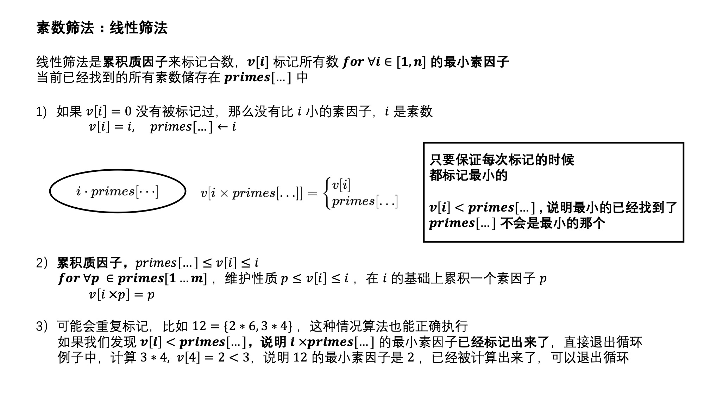

这部分开始，对算法与数学中的一些问题进行探讨
1 2 3 4 5 6 7 bool isPrime(int x) { if (x < 2) return false ; for (int i = 2; i <= sqrt(x); i++) { if (x % i == 0) return false ; } return true ; }
for ∀ x ∈ [ 2 ⋯ n ] \textbf{for} \ \forall x\in [2\cdots n] for ∀ x ∈ [ 2 ⋯ n ] 用 v[...] 数组来标记合数 \quad \text{用 v[...] 数组来标记合数} 用 v[...] 数组来标记合数 if v [ x ] = 1 , x 是合数 \quad \textbf{if} \ v[x]=1, x \text{ 是合数} if v [ x ] = 1 , x 是合数 if v [ x ] = 0 , x 是质数 \quad \textbf{if} \ v[x]=0, x \text{ 是质数} if v [ x ] = 0 , x 是质数 x 2 , ( x + 1 ) ⋅ x , ⋯ , ⌊ n / x ⌋ ⋅ x 都标记成为合数 \quad \quad x^2, (x+1) \cdot x, \cdots, \lfloor n/x \rfloor \cdot x \ \textbf{都标记成为合数} x 2 , ( x + 1 ) ⋅ x , ⋯ , ⌊ n / x ⌋ ⋅ x 都标记成为合数
1 2 3 4 5 6 7 8 9 10 11 const int maxn = 1e6 + 5; int v[maxn]; void primes(int n) { memset(v, 0, sizeof(v)); for (int i = 2; i <= n; i++) { if (v[i]) continue ; printf ("%d\n" , i); for (int j = i; j <= n/i; j++) v[i*j] = 1; } }

1 2 3 4 5 6 7 8 9 10 11 12 13 14 15 16 17 18 19 20 21 22 23 24 25 const int maxn = 1e6 + 10; int v[maxn], prime[maxn]; int primes(int n) { memset(v, 0, sizeof(v)); int m = 0; for (int i = 2; i <= n; i++) { if (v[i] == 0) { v[i] = i; prime[++m] = i; } for (int j = 1; j <= m; j++) { if (v[i] < prime[j] || i * prime[j] > n) break ; v[i*prime[j]] = prime[j]; } } return m; } int main int n = 1e5; int m = primes(n); for (int i = 1; i <= m; i++) printf ("%d\n" , prime[i]); }
ZOJ1842
需要用到一个性质，任意合数x x x ⩽ x \leqslant \sqrt{x} ⩽ x
用筛法筛出[ 2 , R ] [2, \sqrt{R}] [ 2 , R ] for ∀ p ∈ p r i m e s [ . . . ] \textbf{for} \ \forall p \in primes[...] for ∀ p ∈ p r i m e s [ . . . ] ~~~~~~ for ∀ i ∈ ⌊ L / p ⌋ ⋯ ⌊ R / p ⌋ v [ i × p ] = 1 \textbf{for} \ \forall i \in \lfloor L/p \rfloor \cdots \lfloor R/p \rfloor \quad v[i \times p] = 1 for ∀ i ∈ ⌊ L / p ⌋ ⋯ ⌊ R / p ⌋ v [ i × p ] = 1 线性扫描[ L , R ] [L,R] [ L , R ] 1 2 3 4 5 6 7 8 9 10 11 12 13 14 15 16 17 18 19 20 21 22 23 24 25 26 27 28 29 30 31 32 33 34 35 36 37 38 39 40 41 42 43 44 45 46 47 48 49 50 51 52 53 54 55 const int maxn = 1e5 + 10; const ll inf = 0x3f3f3f3f3f3f3f3f; ll L, R; void primes(ll n, vector<ll>& vec) { bool v[maxn]; memset(v, 0, sizeof(v)); for (ll i = 2; i <= n; i++) { if (v[i]) continue ; vec.push_back(i); for (ll j = i; j < n/i; j++) v[i*j] = 1; } } void solve vector<ll> vec; primes(sqrt(R), vec); unordered_map<ll, int> fl; for (auto p : vec) { for (ll i = (L)/p; i <= (R)/p; i++) if (i > 1) fl[i*p] = 1; } vector<ll> res; for (ll i = max(2ll, L); i <= R; i++) if (fl[i] == 0) res.push_back(i); if (res.size() < 2) printf ("There are no adjacent primes.\n" ); else { ll ans1 = -inf, ans2 = inf; ll a, b, c, d; for (int i = 0; i < res.size()-1; i++) { if (chmax(ans1, res[i+1] - res[i])) c = res[i], d = res[i+1]; if (chmin(ans2, res[i+1] - res[i])) a = res[i], b = res[i+1]; } printf ("%lld,%lld are closest, %lld,%lld are most distant.\n" , a, b, c, d); } } void init // } int main //freopen("input.txt" , "r" , stdin); while (scanf("%lld%lld" , &L, &R) == 2) { init(); solve(); } }
⌈ a / b ⌉ \lceil a/b \rceil ⌈ a / b ⌉
⌊ a / b ⌋ \lfloor a/b \rfloor ⌊ a / b ⌋
( a / b ) (a/b) ( a / b ) 四舍五入
UVA10780
1 2 3 4 5 6 7 8 9 10 11 12 13 14 15 16 17 18 19 20 21 22 23 24 25 26 27 28 29 30 31 32 33 34 35 36 37 38 39 40 41 42 43 44 45 46 47 48 49 50 51 52 53 54 55 56 57 58 59 60 61 62 63 64 const int maxn = 1e5 + 10; const int inf = 0x3f3f3f3f; int m, n; class A { public: int p, e; A() = default; A(int p) : p(p) { e = 0; } }; bool fl[maxn]; vector<A> primes; void divide(int n, vector<A>& primes) { primes.clear(); for (int i = 2; i <= sqrt(n); i++) { if (n % i == 0) { primes.push_back(A(i)); while (n % i == 0) n /= i, primes.back().e++; } } if (n > 1) { primes.push_back(n); primes.back().e = 1; } } void solve(const vector<A>& primes) { int ans = inf; for (const auto& p : primes) { int e2 = 0; for (int x = n; x; x /= p.p) e2 += x/p.p; ans = min(ans, e2 / p.e); } if (ans == inf || ans == 0) printf ("Impossible to divide\n" ); else printf ("%d\n" , ans); } int main freopen("input.txt" , "r" , stdin); int kase; scanf("%d" , &kase); int T = 0; while (kase--) { //init(); scanf("%d%d" , &m, &n); printf ("Case %d:\n" , ++T); divide(m, primes); // then solve solve(primes); } }
N = p 1 c 1 ⋅ p 2 c 2 ⋯ p m c m = a 1 ⋅ a 2 ⋯ a m \begin{gathered} N = p_1^{c_1} \cdot p_2^{c_2} \cdots p_m^{c_m} \\ = a_1 \cdot a_2 \cdots a_m \end{gathered} N = p 1 c 1 ⋅ p 2 c 2 ⋯ p m c m = a 1 ⋅ a 2 ⋯ a m
下面证明一个结论a 1 a 2 ⋯ a m ⩾ a 1 + a 2 + ⋯ a m a_1a_2\cdots a_m \geqslant a_1 +a_2 + \cdots a_m a 1 a 2 ⋯ a m ⩾ a 1 + a 2 + ⋯ a m
这个结论比较好证明，假设两个数a , b a, b a , b a b ⩾ a + b ab \geqslant a+b a b ⩾ a + b b > a , b = a + m b>a, \quad b = a + m b > a , b = a + m a b = a 2 + a m , a + b = 2 a + m ab=a^2+am, \quad a+b = 2a+m a b = a 2 + a m , a + b = 2 a + m a b − ( a + b ) = a ( a − 2 ) + ( a + 1 ) m ⩾ 0 ab - (a+b) = a(a-2) + (a+1)m \geqslant 0 a b − ( a + b ) = a ( a − 2 ) + ( a + 1 ) m ⩾ 0
根据数学归纳法，原结论成立
下面我们运用这个结论来解决一个问题EOlymp1246
1 2 3 4 5 6 7 8 9 10 11 12 13 14 15 16 17 18 19 20 21 22 23 24 25 26 27 28 29 30 31 32 33 34 35 36 37 38 39 40 41 42 inline int divide(int& n, int d) { int ans = 1; while (n % d == 0) { ans *= d; n /= d; } return ans; } ll solve(int n) { if (n == 1) return 2; ll ans = 0; int cnt = 0; _rep(i, 2, sqrt(n)) { if (n % i) continue ; cnt++; ll x = 1ll * divide(n, i); ans += x; } if (n > 1) { cnt++; ans += n; } if (cnt <= 1) ans++; return ans; } int main freopen("input.txt" , "r" , stdin); int n, kase = 0; while (scanf("%d" , &n) == 1 && n) { printf ("Case %d: " , ++kase); // then solve ll ans = solve(n); printf ("%lld\n" , ans); } }
阶乘分解
先来看一个结论
1 2 3 4 5 6 7 8 9 10 11 12 13 14 15 16 17 18 19 20 21 22 23 24 25 26 27 28 29 30 31 32 33 34 35 36 37 38 39 40 const int maxn = 1e6 + 10; int n; vector<int> primes; int fl[maxn]; void prework //debug(n); _rep(i, 2, n) { if (fl[i]) continue ; primes.push_back(i); for (int j = i; j <= n/i; j++) fl[i*j] = 1; } } void solve for (auto p : primes) { //debug(p); int ans = 0; for (int x = n; x; x /= p) ans += x/p; printf ("%d %d\n" , p, ans); } return ; } void init memset(fl, 0, sizeof(fl)); primes.clear(); } int main freopen("input.txt" , "r" , stdin); init(); cin >> n; // then solve prework(); solve(); }
ZOJ1863
组合数算法，在数学问题中经常出现
表示对结果( n ! ) d (n!)^d ( n ! ) d
1 2 3 4 5 6 7 8 9 10 11 12 13 14 15 16 17 18 19 20 21 22 23 24 25 26 27 28 29 30 31 32 33 34 35 36 37 38 39 40 41 42 43 44 45 46 47 48 49 50 51 52 53 54 55 56 57 58 59 60 61 62 63 const int maxn = 1e5 + 10; const int N = 1e5; int p, q, r, s; class A { public: int p, e; A A(int p) : p(p) { e = 0; } }; bool fl[maxn]; vector<A> primes; void prework memset(fl, 0, sizeof(fl)); _rep(i, 2, N) { if (fl[i]) continue ; primes.push_back(A(i)); for (int j = i; j <= N/i; j++) fl[i*j] = 1; } } void factorial(int n, int d) { for (auto& p : primes) { for (int x = n; x; x /= p.p) p.e += d*(x/p.p); } } void init for (auto& p : primes) p.e = 0; } void solve init(); factorial(p, 1); factorial(q, -1); factorial(p-q, -1); factorial(r, -1); factorial(s, 1); factorial(r-s, 1); double ans = 1; for (auto p : primes) { ans *= pow(p.p, p.e); } printf ("%.5lf\n" , ans); } int main freopen("input.txt" , "r" , stdin); prework(); while (cin >> p >> q >> r >> s) { // then solve solve(); } }
 微信
微信 支付宝
支付宝